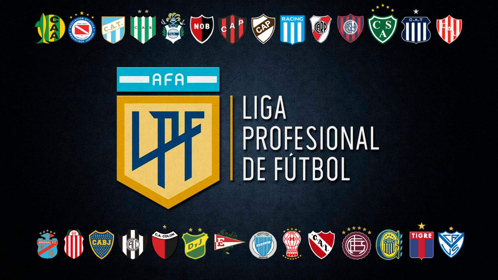

Copa Mundial de Fútbol Qatar 2022
La Copa Mundial de Fútbol de la FIFA Catar 2022 (en árabe, كأس العالم لكرة القدم قطر 2022) será la XXII edición de la Copa Mundial de Fútbol masculino organizada por la FIFA. Se desarrollará desde el 20 de noviembre al 18 de diciembre en Catar, que consiguió los derechos de organización el 2 de diciembre de 2010.

Así quedaron los grupos para la Copa del Mundo de Qatar 2022:
La seleccion Argentina se encuentra en el grupo C:
Fecha 1
Argentina vs. Arabia Saudita | Martes 22 de noviembre, a las 7 | Estadio Lusail.
México vs. Polonia | Martes 22 de noviembre, a las 13 | Estadio 974.
Fecha 2
Argentina vs. México| Sábado 26 de noviembre, a las 16 | Estadio Lusail.
Arabia Saudita vs. Polonia | Sábado 26 de noviembre, a las 10 | Estadio Ciudad Educación.
Fecha 3
Argentina vs. Polonia | Miércoles 30 de noviembre, a las 16 | Estadio 974.
Arabia Saudita vs. México | Miércoles 30 de noviembre, a las 16 | Estadio Lusail.
*Los horarios corresponden a Argentina.
Liga Profecional Argentina

El camino del campeon de la Liga Profecional Argentina
Boca campeón: así fue el camino al título en la Liga Profesional 2022
Boca Juniors se consagró campeón de la Liga Profesional 2022 al empatar 2 a 2 este domingo con Independiente en la Bombonera y gracias a la derrota de Racing en el Cilindro de Avellaneda contra River 2 a 1, en una definición llena de condimentos emocionales. El xeneize, que también se quedó con la Copa de la Liga Profesional en el primer semestre del año, logró el título número 73 de su historia y festejó con sus hinchas en el mítico estadio en el que hace de local.
El conjunto de Hugo Ibarra sumó 52 puntos producto de 16 victorias, cuatro pardas y siete derrotas, la mayoría de ellas en la primera parte del fixture cuando también afrontaba la Copa Libertadores. El certamen lo arrancó con Sebastián Battaglia como entrenador y lo terminó con Hugo Ibarra, quien se hizo cargo del plantel en la jornada número siete y debutó con caída ante San Lorenzo.
En total anotó 34 goles y recibió 28, por lo que terminó con una diferencia de apenas +6. Los equipos que se ubicaron del segundo al noveno puesto concluyeron con mejor resto: Racing (+17), River (+21), Huracán (+14), Atlético Tucumán (+10), Tigre (+12), San Lorenzo (+10), Argentinos Juniors (+9) y Gimnasia de La Plata (+8).
Boca fue de menor a mayor en la Liga Profesional, torneo en el que ser campeón fue el objetivo principal una vez que quedó eliminado de la Copa Libertadores al perder frente a Corinthians de Brasil por penales la serie de octavos de final.
La clave fue el invicto de 13 partidos que tuvo entre las fechas 12 y 25, sin tener en cuenta la victoria reciente contra Gimnasia de La Plata porque, tras la suspensión del partido en primera instancia, se impuso 2 a 1 tras caer en Rosario contra Newell’s 2 a 0. En ese lapso, ganó 10 juegos y empardó tres.
En los clásicos solo pudo ganarle a River 1 a 0 en la Bombonera. Igualó con Racing sin tantos en el Cilindro de Avellaneda, con Independiente 2 a 2 y cayó 2 a 1 con San Lorenzo en el Nuevo Gasómetro.

Copa Argentina 2022
Patronato de Paraná se consagró campeón de la Copa Argentina 2022
El camino a la gloria del conjunto dirigido por Facundo Sava fue sinuoso porque, apremiado en la tabla de promedios y con el principal objetivo de evitar el descenso a la Primera Nacional que finalmente no consiguió, privilegió la Liga Profesional y disputó varios duelos de la Copa Argentina con suplentes. Aún así, eliminó a Deportivo Morón en 32avos de final; a Colón de Santa Fe en 16avos; y a Gimnasia de La Plata en octavos. En cuartos, su víctima fue River, al que dejó atrás por penales tras empatar 2 a 2; y en semifinales Boca, también por definición desde los 12 pasos y luego de una parda 1 a 1.
Los cinco partidos de Patronato en la Copa Argentina 2022
32avos de final vs. Deportivo Morón: 2-0 en el estadio Brigadier Estanislao López de Santa Fe.
16avos de final vs. Colón: 1-1 y ganó por penales 3-2 en el estadio Marcelo Bielsa de Rosario.
Octavos de final vs. Gimnasia de La Plata: 2-1 en Resistencia, Chaco.
Cuartos de final vs. River: 2 a 2 y ganó por penales en el estadio Carlos Augusto Mercado Luna de La Rioja.
Semifinales vs. Boca: 1 a 1 y ganó por penales 4 a 2 en el estadio Bicentenario de San Juan.
Final vs. Talleres: 1 a 0 en el estadio Malvinas Argentinas de Mendoza.

.jpg)